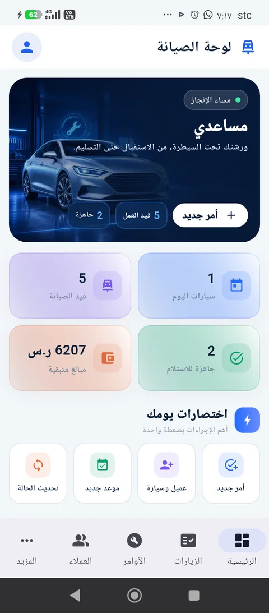

الإصدار 1.2.0 متاح الآن للأندرويد
مركز الصيانة كاملًا في يدك.
«مساعدي» يجمع العميل والسيارة والزيارة والصور والفاتورة والمخزون والتقارير في تطبيق عربي واحد، واضح وسريع ومصمم لعمل الورشة الحقيقي.
- Android 5.0 فأحدث
- يعمل محليًا
- عربي وRTL
- جوال ولوحي

جاهزة للاستلاممتابعة مباشرة
تقارير عربيةPDF وطباعة
كل يوم عمل أوضح
ليس دفترًا إلكترونيًا؛ بل نظام تشغيل للمركز.
كل بطاقة هنا مرتبطة ببيانات حقيقية داخل التطبيق، من لحظة استقبال السيارة حتى تسليمها وأرشفة الزيارة.
لوحة قيادة يومية
سيارات اليوم، الجاري صيانتها، الجاهزة، المبالغ المتبقية، الموافقات، القطع المنتظرة، التأخير، والمخزون المنخفض.
الزيارات وأوامر العمل
حالات متدرجة، بحث وفلاتر، موافقة العميل، إغلاق وإعادة فتح وسجل زمني.
العميل والسيارة
ملف موحد يضم سيارات العميل وزياراته وصيانته وسجله المالي وحالة VIP.
صور قبل وأثناء وبعد
تصوير مباشر أو اختيار من المعرض، حفظ داخلي دائم، معرض كامل، وإدراج الصور داخل تقرير الزيارة.
- كاميرا الجوال
- معرض الصور
- أرشفة حسب المرحلة
PDF عربي احترافي
فاتورة وتقرير زيارة بالوصف والشكوى والتشخيص والحل والقيمة والصور.
المال والضمان
دفعات، خصومات، ضريبة، متبقي، طرق دفع، تكاليف الصيانة وضمان مرن.
المخزون والموردون
قطع الغيار والكميات والحد الأدنى والأسعار، مع ملفات الموردين والمشتريات.
نسخ احتياطية موثوقة
تصدير واستيراد مع فحص البنية وبصمة السلامة وملخص قبل إدخال البيانات.
من الاستقبال إلى الأرشيف
زيارة واحدة، ومسار لا يضيع منه شيء.
يحافظ «مساعدي» على تسلسل العمل، ويجعل معلومات العميل والسيارة هي الأبرز في كل خطوة.
استعرض قائمة الخدمات كاملة-
01
استقبال السيارةالعميل، اللوحة، الشكوى ونوع الصيانة.
-
02
الفحص والتوثيققائمة فحص وصور قبل الصيانة.
-
03
التشخيص والموافقةالتشخيص، التسعير واعتماد العميل.
-
04
الإصلاح والمتابعةالخدمات والقطع والفني وصور أثناء العمل.
-
05
الفاتورة والتسليمالدفعات والضمان وصور ما بعد الصيانة.
-
06
أرشيف دائمزيارة قابلة للفتح والطباعة من ملف العميل والسيارة.
واجهة حقيقية من التطبيق
مصمم للجوال، لا نسخة مصغرة من سطح المكتب.
اضغط على أي شاشة لمشاهدتها بالحجم الكامل.
دليل الوظائف الكامل
كل ما يقدمه التطبيق، بلا اختصار.
افتح كل مجموعة لمراجعة تفاصيلها. القائمة مبنية من صفحات ووظائف الإصدار الحالي نفسه.
العملاء والسياراتالملفات والبحث والتواصل 10 خدمات
- إضافة وتعديل ملف العميل وبيانات الاتصال والعنوان والملاحظات.
- ربط أكثر من سيارة بالعميل مع اللوحة والشركة والموديل والسنة.
- بحث بالاسم أو الجوال أو رقم اللوحة.
- فلاتر الكل، قيد الصيانة، المكتملة والعملاء المميزين VIP.
- ملخص عدد السيارات والزيارات والزيارات النشطة لكل عميل.
- ملف مالي وصيانة موحد لكل عميل.
- سجل كامل لكل سيارة وزياراتها السابقة والحالية.
- فتح أي زيارة محفوظة من ملف العميل أو السيارة.
- رسائل فردية وجماعية عبر واتساب.
- خصم العميل المميز حسب عدد الزيارات وإعدادات المركز.
الزيارات والصيانةمن الاستقبال إلى الإغلاق 16 خدمة
- فتح زيارة أو أمر صيانة جديد لسيارة موجودة.
- رقم زيارة مستقل وتاريخ استقبال محفوظ.
- وصف الزيارة وشكوى العميل ونوع الصيانة.
- التشخيص الفني والأعطال المكتشفة.
- الحل والإصلاح المنفذ والملاحظات الداخلية.
- قائمة فحص لحالة السيارة ومقتنياتها.
- إسناد الزيارة إلى موظف أو فني.
- مراحل الاستقبال والفحص والموافقة والإصلاح وانتظار القطع والجاهزية.
- تغيير الحالة مع سجل زمني للحركات.
- تنبيه الزيارات المتأخرة وبانتظار الموافقة أو القطع.
- إضافة خدمات وقطع غيار وكميات وأسعار.
- تكاليف الصيانة والخصم والضريبة والمبلغ المدفوع والمتبقي.
- تسجيل موافقة العميل على التسعير.
- إغلاق الزيارة بسبب إصلاح أو رفض أو عدم إصلاح أو سبب آخر.
- إعادة فتح الصيانة المغلقة وإنشاء صيانة جديدة للسيارة نفسها.
- بحث وفلاتر للزيارات النشطة والجاهزة والمغلقة والكل.
الصور والتقارير والطباعةتوثيق مرئي وPDF عربي 11 خدمة
- صور السيارة قبل الصيانة.
- صور أثناء الصيانة والإصلاح.
- صور بعد اكتمال العمل.
- التقاط مباشر من كاميرا الجوال.
- اختيار عدة صور من معرض الجهاز.
- ضغط الصور وحفظها داخل مساحة التطبيق بصورة مستقلة عن المصدر.
- استعادة الصور المحددة إذا أعاد Android تشغيل النشاط.
- معرض صور كامل مع التكبير والتنقل.
- فاتورة PDF عربية قابلة للطباعة والمشاركة.
- تقرير زيارة PDF يضم العميل والسيارة والوصف والشكوى والحل والقيمة.
- صفحات صور منظمة حسب قبل وأثناء وبعد داخل تقرير الزيارة.
الفواتير والمدفوعات والضمانمتابعة مالية دقيقة 12 خدمة
- إنشاء فاتورة مرتبطة مباشرة بالزيارة والعميل والسيارة.
- تفاصيل الخدمات وقطع الغيار وتكاليف الصيانة.
- حساب الإجمالي قبل الخصم والخصم والضريبة والإجمالي النهائي.
- عرض المقبوض والمتبقي وحالة الفاتورة.
- تسجيل أكثر من دفعة على الفاتورة.
- طرق دفع: نقدي، شبكة، تحويل أو آجل.
- خصم مبلغ ثابت أو نسبة مئوية.
- اقتراح خصم العميل المميز عند الإغلاق.
- منع السداد بقيمة تتجاوز المتبقي.
- ضمان افتراضي قابل للتعديل لكل زيارة.
- شروط ضمان وتذييل فاتورة محفوظان في إعدادات المركز.
- شعار المركز وتوقيعه وبياناته داخل مستندات PDF.
تشغيل المركزمخزون وموردون ومواعيد وموظفون 15 خدمة
- إدارة أصناف المخزون ورمز الصنف والكميات.
- سعر التكلفة وسعر البيع لكل قطعة.
- الحد الأدنى وتنبيه المخزون المنخفض.
- خصم القطعة عند إضافتها للصيانة وإعادتها عند الإزالة.
- إدارة الموردين وبيانات الاتصال والعنوان.
- ربط المورد بعدد الأصناف والمشتريات.
- إنشاء وتعديل وحذف المواعيد.
- ربط الموعد بالعميل والسيارة ونوع الخدمة.
- حالات الموعد: مجدول، مؤكد، مكتمل أو ملغي.
- ملخص مواعيد اليوم وإجمالي المواعيد.
- إدارة الموظفين والفنيين وأرقام الجوال.
- التخصص والدور والراتب وتاريخ التعيين والحالة.
- إجمالي التكليفات والأعمال الجارية لكل موظف.
- تسجيل المصروفات حسب الفئة والتاريخ وطريقة الدفع.
- إجمالي المصروفات ومصروفات الشهر.
التقارير والإعدادات والبياناتقرارات ونسخ احتياطية وهوية المركز 18 خدمة
- عدد سيارات وزيارات اليوم.
- عدد سيارات وزيارات الشهر.
- الصيانات المفتوحة والسيارات المسلمة.
- إجمالي المقبوض والمبالغ المستحقة.
- عدد الأصناف منخفضة المخزون.
- إجمالي العملاء والسيارات وأوامر الصيانة.
- ترتيب أكثر شركات السيارات ترددًا.
- ترتيب أكثر الأعطال والخدمات تكرارًا.
- ترتيب أكثر العملاء زيارة مع شارة VIP.
- اسم المركز والجوال والبريد والعنوان.
- الرقم الضريبي والسجل التجاري.
- رفع شعار المركز والتوقيع.
- مدة الضمان وشروطه ونص تذييل الفاتورة.
- حد زيارات العميل المميز ونسبة خصمه.
- تصدير نسخة احتياطية موحدة.
- فحص بنية النسخة وبصمة سلامتها قبل الاستيراد.
- عرض ملخص أعداد السجلات قبل الاستيراد.
- استيراد بيانات Desktop وإعادة تحميلها وإحصاء جميع الجداول.
بيانات المركز تحت سيطرتك
تشغيل محلي، صلاحيات قليلة، ونسخة يمكنك حملها.
السجلات الأساسية والصور تحفظ داخل الجهاز. يحتاج التطبيق إلى الكاميرا أو اختيار الملفات فقط عندما تطلب أنت ذلك، ويتيح نقل البيانات عبر نسخة احتياطية يتم التحقق منها قبل الاستيراد.
لا يتطلب حسابًا سحابيًا لتشغيل السجل الأساسي
الصور تُنسخ إلى تخزين التطبيق الداخلي
بصمة SHA-256 للتحقق من ملف APK
يحافظ التحديث على البيانات عند ثبات الحزمة وشهادة التوقيع
معلومات الإصدار
ملف Android عالمي واحد.
مناسب لمعظم أجهزة Android الحديثة والقديمة نسبيًا، ويشمل معماريات الهواتف والأجهزة اللوحية الشائعة.
- اسم التطبيق
- مساعدي
- الإصدار
- 1.2.0 (البناء 3)
- اسم الحزمة
- com.fixcare.fixcare_unified
- أقل إصدار
- Android 5.0 — API 21
- الاستهداف
- Android 15 — API 35
- المعماريات
- arm64 • armv7 • x86 • x86_64
- حجم الملف
- 27.38 ميجابايت
- تاريخ الإصدار
- 30 يوليو 2026
تثبيت مباشر خارج المتجر
ثلاث خطوات وتبدأ إدارة المركز.
قد تختلف تسمية خيار التثبيت قليلًا بين شركات الجوال.
-
1
حمّل الملف
اضغط زر التنزيل وانتظر وصول APK إلى مجلد التنزيلات.
-
2
اسمح لهذا المصدر
إذا طلب Android، فعّل «السماح من هذا المصدر» للمتصفح فقط.
-
3
ثبّت وافتح مساعدي
عند ثبات اسم الحزمة وشهادة التوقيع، اختر تثبيت لتحديث النسخة الحالية مع بقاء البيانات.
أسئلة سريعة
قبل التنزيل
إجابات مختصرة على أهم ما يخص التثبيت والبيانات.
هل يعمل التطبيق دون إنترنت؟
نعم، إدارة السجلات والصور والفواتير الأساسية محلية. يلزم الإنترنت فقط للخدمات الخارجية مثل فتح واتساب.
هل تضيع البيانات عند تثبيت التحديث؟
التثبيت فوق النسخة الحالية يحافظ على البيانات ما دام التطبيق يحمل اسم الحزمة وشهادة التحديث نفسيهما. خذ نسخة احتياطية دوريًا دائمًا.
لماذا يظهر تحذير «مصدر غير معروف»؟
لأن الملف يثبت مباشرة خارج Google Play. اسمح للمتصفح المستخدم فقط، ثم يمكنك إيقاف الإذن بعد التثبيت.
كيف أتأكد من سلامة الملف؟
قارن بصمة SHA-256 المعروضة في قسم المواصفات مع بصمة الملف بعد تنزيله.